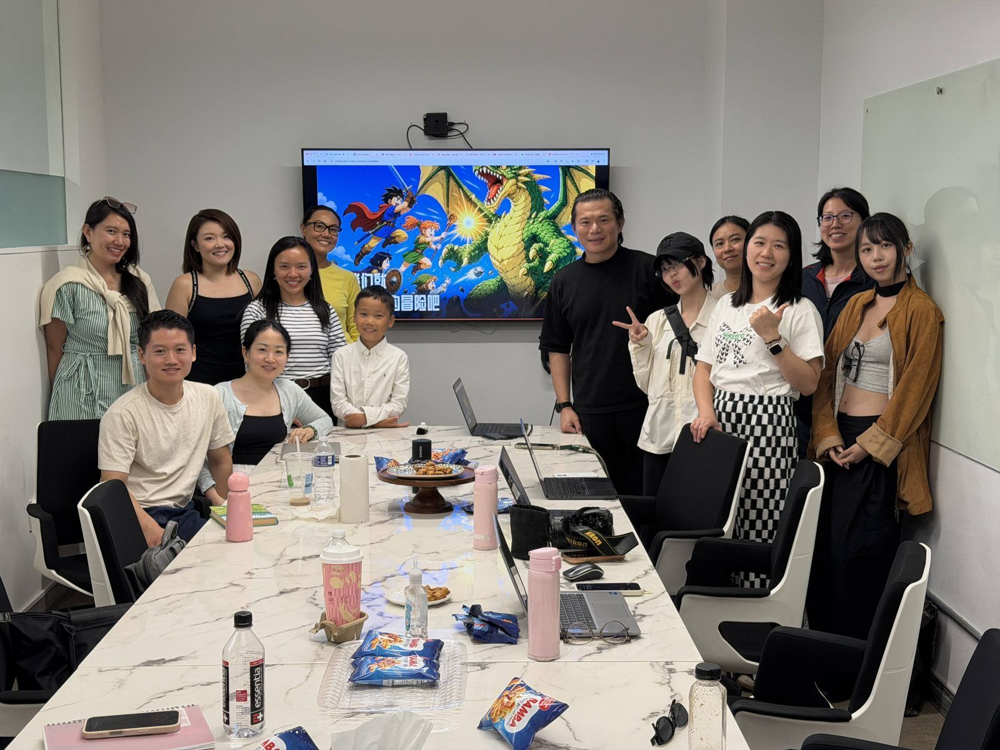
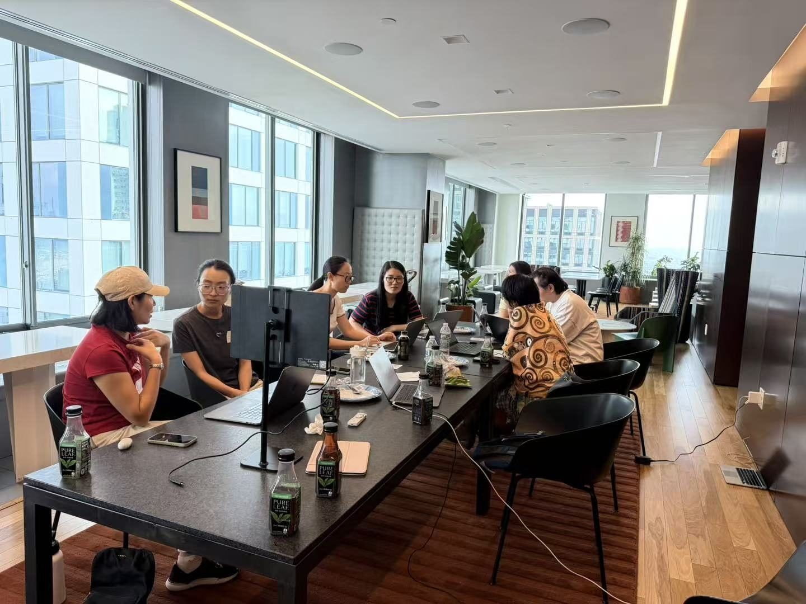
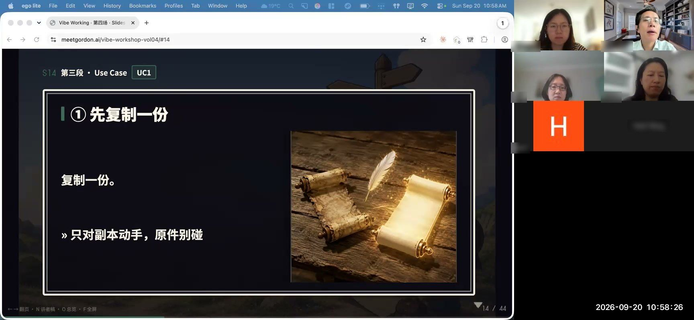

I want to help onboard over 200 people to agentic AI, so they can close their laptops without losing track of their work

Before I graduate next May, I want to help over 200 people who don't code start using agentic AI for real.
They come from different industries and are at different stages of life. I hope they spend the time they get back on what matters more: their families, their friends.
I think I can do it. In August and September I ran four workshops, and almost fifty people have sat down at their laptops with me, from finance, audit, law, education, and the arts.

I closed my own laptop first
It happened to me first.
Since late last year, I've been handing my life over to AI agents, one piece at a time. The biggest change is that I finally let myself close my laptop. I don't carry it everywhere anymore, and I reach for my phone much less.
Closing it doesn't mean forgetting my work. When an idea comes, I say a few words into my voice recorder and let the idea sit. I don't have to keep my work running in my head all day. Agentic AI has taken the draining tasks off my hands: endless formatting in PowerPoint and Excel, sorting recordings and notes, filling out forms that never seem to end.
Looking back, a lot of the time when I thought I was working, I was really just spinning my wheels. Most of what drains me at work is that kind of friction. The thinking itself rarely wears me out. With less friction, I can spend time with my kid, even get out of the house, without worrying about work left undone.
Nobody complains about having too much life in their work-life balance. It's always the work that tips the scale.
The new paradigm hasn't been written yet
For people who don't code, the road is still steep.
I changed careers in midlife. I studied clinical medicine, spent many years in advertising in Beijing, and now study interaction design in New York. What I want to explore is UI/UX in the age of AI. When people get stuck, I don't think it's about ability. It's the distance between how these tools were designed and how we actually use them.
I believe AI will reshape how we understand UI/UX. But what I learn in class isn't enough to see where that's heading. The curriculum mostly teaches what has already happened, and the new paradigm hasn't been set yet.
The best way to understand it is to help create it.
That's one reason I run these workshops. I want to see firsthand how people use these tools, where they get stuck and where it hurts, and then think about what the UI/UX of the next generation of AI should look like. Rather than betting on one big swing at a hackathon, I'd rather build something I can keep doing. And make some real friends along the way.
This series
From here, I'll write one post per workshop: what happened that day, where people got stuck, and what I changed afterward. If you want to get started yourself, or you're about to bring a team of non-coders along, this series is for you.

I'd also love to bring the workshop to more places. If your company, school, or community wants to host one, I'd be glad to come, and it's free. What I really want is to help more people, and to connect with them. I prefer meeting in person. It feels more personal, and I get to know everyone. I'm happy to go anywhere in the New York area. Online works too, in English or Mandarin. If you'd like to talk, write to me at hi@meetgordon.ai.